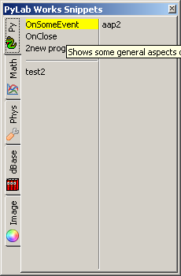
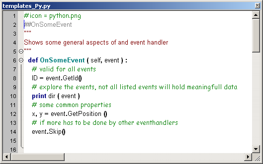
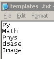

Code Editor  (march 2008)
(march 2008)
developer
SciTE uses the default key bindings defined in Scintilla, so keyboard commands in SciTE mostly follow common Windows and GTK+ conventions. All move keys (arrows, page up/down, home and end) allows to extend or reduce the stream selection when holding the Shift key, and the rectangular selection when holding the Shift and Alt keys. Some keys may not be available with some national keyboards or because they are taken by the system such as by a window manager on GTK+. The user.shortcuts setting may be used to assign a key to a function. Note that Home key behaviour is changed by the vc.home.key option. Keyboard equivalents of menu commands are listed in the menus. Some less common commands with no menu equivalent are:
|
Magnify text size. |
Ctrl+Keypad+ |
|
Reduce text size. |
Ctrl+Keypad- |
|
Restore text size to normal. |
Ctrl+Keypad/ |
|
Cycle through recent files. |
Ctrl+Tab |
|
Indent block. |
Tab |
|
Dedent block. |
Shift+Tab |
|
Delete to start of word. |
Ctrl+BackSpace |
|
Delete to end of word. |
Ctrl+Delete |
|
Delete to start of line. |
Ctrl+Shift+BackSpace |
|
Delete to end of line. |
Ctrl+Shift+Delete |
|
Go to start of document. |
Ctrl+Home |
|
Extend selection to start of document. |
Ctrl+Shift+Home |
|
Go to start of display line. |
Alt+Home |
|
Extend selection to start of display line. |
Alt+Shift+Home |
|
Go to end of document. |
Ctrl+End |
|
Extend selection to end of document. |
Ctrl+Shift+End |
|
Go to end of display line. |
Alt+End |
|
Extend selection to end of display line. |
Alt+Shift+End |
|
Expand or contract a fold point. |
Ctrl+Keypad* |
|
Create or delete a bookmark. |
Ctrl+F2 |
|
Go to next bookmark. |
F2 |
|
Select to next bookmark. |
Alt+F2 |
|
Find selection. |
Ctrl+F3 |
|
Find selection backwards. |
Ctrl+Shift+F3 |
|
Scroll up. |
Ctrl+Up |
|
Scroll down. |
Ctrl+Down |
|
Line cut. |
Ctrl+L |
|
Line copy. |
Ctrl+Shift+T |
|
Line delete. |
Ctrl+Shift+L |
|
Line transpose with previous. |
Ctrl+T |
|
Selection duplicate. |
Ctrl+D |
|
Find matching preprocessor conditional, skipping nested ones. |
Ctrl+K |
|
Select to matching preprocessor conditional. |
Ctrl+Shift+K |
|
Find matching preprocessor conditional backwards, skipping nested ones. |
Ctrl+J |
|
Select to matching preprocessor conditional backwards. |
Ctrl+Shift+J |
|
Previous paragraph. Shift extends selection. |
Ctrl+[ |
|
Next paragraph. Shift extends selection. |
Ctrl+] |
|
Previous word. Shift extends selection. |
Ctrl+Left |
|
Next word. Shift extends selection. |
Ctrl+Right |
|
Previous word part. Shift extends selection |
Ctrl+/ |
|
Next word part. Shift extends selection. |
Ctrl+\ |
Code Editor
|
Here you can enter code that will be executed, each time this Brick is passed. The code editor is based on Scintilla. The editor has code highlight support, autocompletion and many more features. Another nice feature of this code editor is the code-snippet manager, of which the visibility is toggled by F7. And of course editing of the code templates is done in a separate but identical code editor. |
|
Code Snippets Manager
A code snippet is a (small) pieces of code that can be inserted at the caret position in the editor. The insertion is done is such a way that the indentation (if the caret is not at position 0) is preserved. Organization of a code snippet is very easy. The code snippets manager is made visible (as a stay on top form) by pressing F7. When you hoover over the name of a code snippet, the name will highlight and a hint appears. Hovering while the template file is open, the position in the template file will follow. Clicking on a name will insert the code snippet.
Hoover: highlight + hint + follow code in template window
Left Click: insert in parent or copy to clipboard
Middle Click: nothing at the moment
Right Click: open template editor at this location
Code snippets can be organized in different files, sited in the main program directory, and named "templates_XXXX.py", where XXXX is a short name (otherwise tabs gets too large). The code snippet manager searches for all files of the above mentioned type, will read them and place them in the form. Normally the order of the detected files is random, or at least will depend on the operating system, but you can add a small text file "templates_.txt" in the main directory and list the desired order of the template files. Files that are not in that ordered list, will be placed at the bottom tabs.
|
 |
 |
 |
The code snippet files can be edited, by right-clicking on a name, the correct file will be opened, at the location of the clicked name. An example of a code snippet file is given in the middle picture above. When the code snippet editor is closed, the code snippet manager is reloaded and the changes made will be visible. What's in the code snippet file from the picture above:
# icon = , (line 1), a picture that will be displayed on the tab. This picture definition must be on the first line en the picture must be a 16*16 image.
##OnSomeEvent (line 2), the name as it will appear in the snippet window
""" extended explanation """ (line 3..5), lots of text that will used as the hint when the mouse hoovers over the table
the rest (line 6 ..14), the code (with a good indentation) that will be inserted
##- (not shown), insert a horizontal line in the table
##| (not shown), start a new column in the table
Autocompletion
As soon as you type the first character of a new word, the code editor will show you a list of known words (autocompletion-list), with only words that matches the character(s) typed. Continuing to type, will shrink the list dynamically, to only the words that matches all the characters of the word. If a match no longer exists, the autocompletion-list will disappear. Although you can select a word in the list with a mouse click, it's far more convenient to type a few more characters, or select the item with arrow keys. If the desired word is highlighted (and on top) of the autocompletion-list, the easiest way to complete the word is by either typing a space (" ") or a point (".") whichever you need. This will have the effect that the word is completed and the space of point is added. In case of a point, a new autocompletion-list will be opened with suggestions for the word after the point. By pressing the enter key, the word is inserted, and the cursor is placed directly behind the word (no extra insertions). With the Esc-key you can hide the autocompletion-list.
" " = insert the selected word and add a space (" ")
"." = insert the selected word and add a point (".") and start a new autocompletion-list
Enter = insert the selected word and put the cursor behind the selected word
Esc = hide the autocompletion-list
Special Keys
|
F1 |
|
|
F2 |
|
|
F7 |
Show / focus template windows |
|
F9 |
Activate changes / Compile |
|
^B ^ScrollWheel Down |
increase font size |
|
^N ^ScrollWheel Up |
decrease font size |